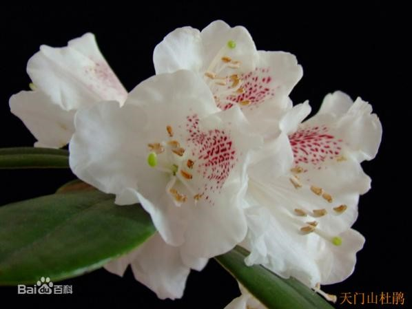
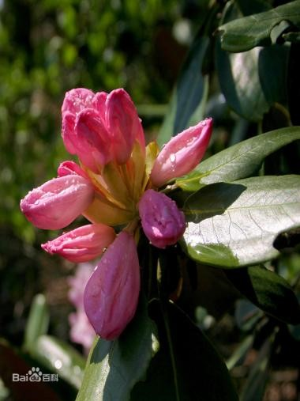
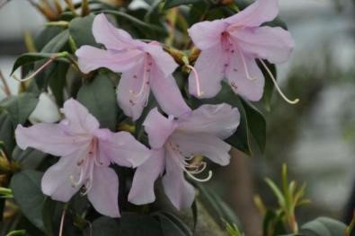
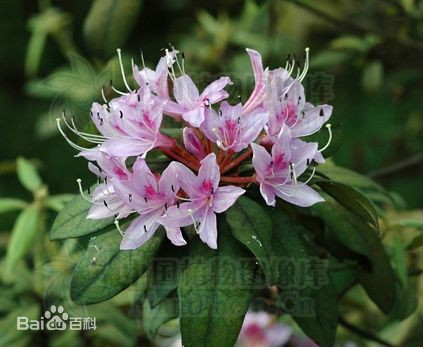
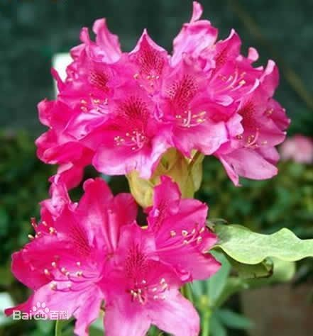
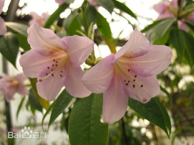
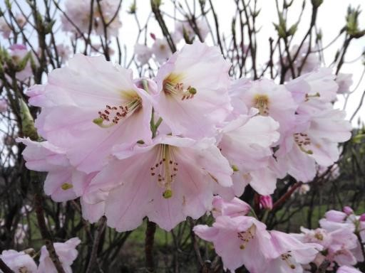
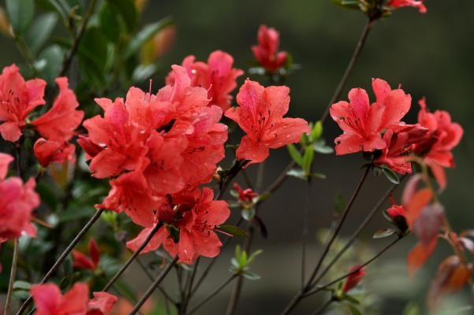
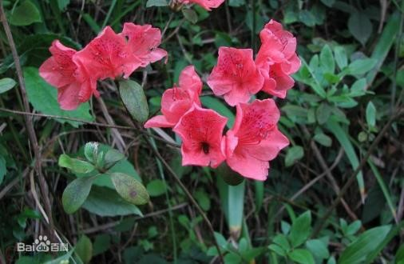
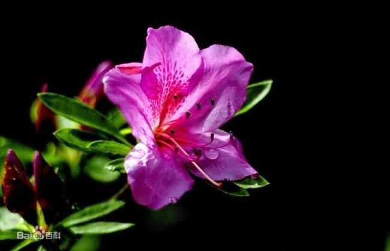

杜鹃园
建于 2008 年，面积450亩 ，拟重点收集保存杜鹃 属植物中适应性强、价值大、观赏性强、开发利用价 值高的珍稀种类、种源和居群 2000 份，150 种 300 个品种，打造成为国际先进水平的中国杜鹃属珍稀植 物迁地保育与遗传育种平台。目前，已引种保存 88 种 230 个品种，其中天门山杜鹃、张家界杜鹃、涧上杜鹃系国内首次引种栽培；鹿角杜鹃、溪畔杜鹃、高 山杜鹃、毛棉杜鹃、云锦杜鹃、映山红、各种春鹃等观赏效果极具特色。

天门山杜鹃
天门山杜鹃，常绿灌木或小乔木，约2－4 m.当年生小枝黄褐色，无毛。叶革质，长圆状椭圆形。先端急尖，基部宽楔型，边缘全缘反卷，上面暗绿色，无毛，唯有皱纹，下面具毛被2层，上层薄海绵状，银白色，下层紧贴叶片，常集生树顶。花常5－7朵组成短总状花序顶生，花萼小，杯状。花冠漏洞状钟形，淡红色或白色，内部上方具有紫红斑点，裂片近圆形。顶端微缺。雄蕊10枚，不等长，花丝白色。花药狭椭圆形，黄褐色，长约1.5mm。雌蕊与花冠等长，柱头头状，黄绿色。蒴果圆柱状，长约2cm，花期4－5月，果期8－9月。

涧上杜鹃
灌木，高约3米，枝圆柱形，灰褐色，幼时密被锈色糙伏毛，后无毛。叶革质，集生 枝端，椭圆状长圆形。披针形或长圆状披针形，先端钝尖，具短尖头，基部楔形或宽楔形，边缘微反卷；叶柄长4毫米，密被锈色糙伏毛。伞形花序顶化，有花4—6朵；花梗密被锈色糙伏毛；花萼5浅裂，裂片细圆齿状；花冠漏斗形，深紫红色至 粉红色，花冠管圆筒状，基部直径3毫米，裂片5，长圆状 卵形，无斑点；雄蕊花丝中部以下被微柔 毛，子房密被绢状锈色糙伏毛，花柱长3．5厘米，无毛。蒴果圆锥状， 长7毫米，被锈色 糙伏毛， 花期5月。

鹿角杜鹃
常绿灌木或小乔木，高可达5米；小枝开展，灰色或淡白色，无毛。叶集生，近于轮生，革质，卵状椭圆形或长圆状披针形，上面深绿色，具光泽，下面淡灰白色，叶柄无毛。花芽长圆状锥形，单生枝顶叶腋，花梗无毛；花萼不明显；花冠白色或带粉红色，裂片开展，长圆形，花丝扁平，子房圆柱状，褐色，蒴果圆柱形，花柱宿存。3-4月开花，稀5-6月，7-10月结果。

溪畔杜鹃
常绿灌木，高可达3米；幼枝纤细，叶纸质，上面深绿色，下面淡黄褐色，叶脉在上面凹陷，下面凸出，花芽圆锥状卵形，伞形花序顶生，有花多达10朵以上；花梗密被短腺头毛及扁平长糙伏毛；花萼裂片狭三角形，被淡黄褐色短腺头毛及长糙伏毛；花冠漏斗形，紫红色，狭圆筒形，花丝基部被微柔毛，花药紫色，密被红棕色刚毛。蒴果长卵球形，4-6月开花，7-11月结果。

高山杜鹃
常绿小灌木，高可达1米，分枝繁密，伏地或挺直。叶常散生于枝条顶部，革质，上面浅灰至暗灰绿色，下面淡黄褐色至红褐色，叶柄被鳞片。花序顶生，伞形，有花数朵；花芽鳞脱落；花萼小，带红色或紫色，花冠宽漏斗状，淡紫蔷薇色至紫色，罕为白色，花丝基部被绵毛；蒴果长圆状卵形，5-7月开花，9-10月结果。

毛棉杜鹃花
灌木或小乔木，高2-4（-8）米；幼枝粗壮，淡紫褐色，无毛，老枝褐色或灰褐色。叶厚革质，集生枝端，近于轮生，长圆状披针形或椭圆状披针形，上面深绿色，叶脉凹陷，下面淡黄白色或苍白色，中脉凸出。数伞形花序生枝顶叶腋，每花序有花3-5朵；花冠淡紫色、粉红色或淡红白色，狭漏斗形，5深裂，裂片开展，匙形或长倒卵形。蒴果圆柱状，长3.5-6厘米，直径4-6毫米，先端渐尖，花柱宿存。花期4-5月，果期7-12月。

云锦杜鹃
常绿灌木或小乔木，高3-12米；主干弯曲，树皮褐色，片状开裂；幼枝黄绿色，初具腺体；老枝灰褐色。叶厚革质，长圆形至长圆状椭圆形，上面深绿色，有光泽，下面淡绿色。顶生总状伞形花序疏松，有花6-12朵，有香味；花冠漏斗状钟形，长4.5-5.2厘米，直径5-5.5厘米，粉红色，外面有稀疏腺体，裂片7，阔卵形。蒴果长圆状卵形至长圆状椭圆形，直或微弯曲。花期4-5月，果期8-10月。

映山红
映山红又名杜鹃花，山石榴，为常绿或平常绿灌木。古有杜鹃鸟，日夜哀鸣而咯血，染红遍山的花朵，因而得名。杜鹃花一般春季开花，每簇花2-6朵，花冠漏斗形，有红、淡红、杏红、雪青、白色等，花色繁茂艳丽。映山红是杜鹃花中常见的一种，泛指各种红色的杜鹃花，因其花开时映得满山皆红而得名，是杜鹃花的一种通俗叫法。

满山红
落叶灌木，高1-4米；枝轮生，幼时被淡黄棕色柔毛，成长时无毛。叶厚纸质或近于革质，常2-3集生枝顶，椭圆形，卵状披针形或三角状卵形，上面深绿色，下面淡绿色。花芽卵球形，鳞片阔卵形，顶端钝尖。花通常2朵顶生，先花后叶，花冠管长约1厘米，基部径4毫米，裂片5，深裂，长圆形，花冠桃红色而密布紫红色小斑点。蒴果椭圆状卵球形，密被亮棕褐色长柔毛。花期4-5月，果期6-11月。
